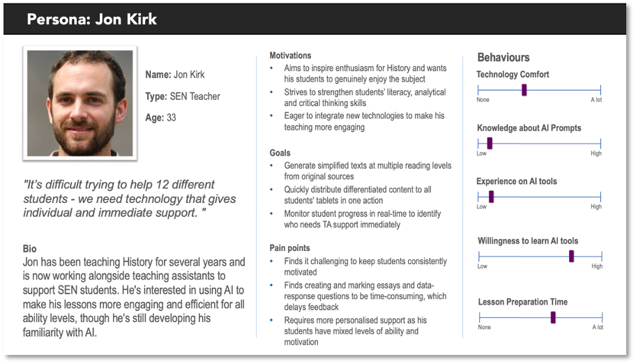
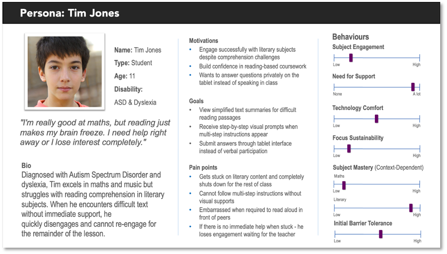

Background
Understanding the project origins, challenges, and approach that shaped Manuscripta's development.
Background
Manuscripta was proposed by Professor Dean Mohamedally at UCL in collaboration with the National Autistic Society. The project originated from a practical concern raised by specialist SEN schools: students with autism and complex learning needs were struggling to maintain focus when using iPads in the classroom. While iPads offered the accessibility advantages of a large touchscreen and intuitive tap-based navigation, they also introduced significant distractions. Students were able to switch freely between applications, access the internet, and interact with content unrelated to their lessons, undermining the structured, low-stimulus environment that many autistic learners require.
Pen and paper, the natural alternative, was not always suitable either. For some students, the physical demands of handwriting create a barrier to engagement, and paper-based materials offer teachers no means of monitoring student progress or providing timely, adaptive feedback. Schools therefore found themselves caught between two inadequate options: a digital tool that overwhelmed students with sensory input, and an analogue approach that lacked the flexibility and responsiveness of modern educational technology.
The team was given this problem and asked to design and build a solution from first principles. There were no prescribed technologies or interfaces. The scope, architecture and implementation were determined entirely by the team, guided by ongoing input from project partners and stakeholder feedback.
The Challenge
The core challenge was to develop a digital learning ecosystem that preserved the accessibility benefits of tablet-based education while eliminating the sources of distraction and sensory overload that made iPads unsuitable for SEN classrooms. Any solution would need to meet three interdependent requirements simultaneously.
First, the student-facing interface had to be calm and constrained. This meant eliminating colour, animation, notification systems and unrestricted app access — all features standard on consumer tablets but harmful in this context. Second, the system had to be genuinely useful to teachers, providing tools to create tailored learning materials quickly, monitor the classroom in real time, and respond to individual student needs without disrupting the wider group. Third, given that the schools involved handle sensitive data about vulnerable young people, the system had to operate with no cloud dependency and full compliance with data protection requirements.
A further technical constraint was that commercially available E-ink devices, while ideal for their display characteristics, lack the computational power to run generative AI models locally. This ruled out a simple single-device solution and required the team to architect a system in which AI processing was decoupled from content consumption, running on the teacher's machine and distributing results to student devices over a local network.
Our Approach
Manuscripta addresses these challenges through a two-component system. The teacher application runs on a Windows laptop with an AI-capable chipset and uses IBM Granite, an on-device large language model, to generate educational materials including quizzes, worksheets and polls. The teacher can specify the topic, target age group and reading level, and the model produces content accordingly without any internet connection. Materials are then distributed to student devices over a local area network.
The student application runs on Android-based E-ink tablets, such as those manufactured by Boox and AiPaper, as well as on Kindle and reMarkable devices supplied by Richard Cloudesley School. The monochromatic, low-refresh display of these devices eliminates the audiovisual stimulation associated with standard tablets, and the application runs in kiosk mode to prevent students from navigating away from their assigned material. Students can annotate worksheets using a stylus, submit answers to quizzes and polls, and raise a discreet help request visible only to the teacher.
The teacher dashboard provides a live overview of all connected devices, showing each student's status and aggregating quiz and poll responses anonymously. All data remains on the local network and is never transmitted to external servers, ensuring that no personally identifiable student information is stored or processed beyond the classroom.
Project Goals
The educational, teacher support, and technical objectives driving Manuscripta's development.
Student outcomes
Reduce sensory overload by delivering content on monochromatic E-ink displays, eliminating the bright colours, notifications and unrestricted app access associated with standard tablets
Improve engagement for quieter or more anxious students through a discreet help request feature that alerts the teacher without drawing attention to the individual
Support varying reading levels and learning needs through AI-generated content that can be adjusted in complexity on demand
Teacher support
Replace time-consuming manual worksheet creation with an AI content pipeline that produces tailored quizzes, worksheets and polls in seconds using IBM Granite
Provide a real-time monitoring dashboard showing every student's status, help requests and device health without requiring physical movement around the classroom
Enable remote classroom controls including screen lock and session management from a single Windows application
Technical
Demonstrate a fully on-device AI pipeline integrated into a practical classroom tool with no cloud dependency, using IBM Granite running locally on the teacher's laptop
Design a low-latency local network protocol capable of serving up to 30 simultaneous E-ink devices
Build a modular architecture where individual components, including the networking layer and AI pipeline, can be adapted for other educational or assistive technology contexts
Project Partners
Acknowledgements and partner contributions that made Manuscripta possible.
Acknowledgements
The team would like to thank Professor Dean Mohamedally (UCL) for his supervision and guidance throughout the project. We are grateful to Marie-Louise Holmberg and Mareli Smith of the National Autistic Society for their input on the needs of autistic learners and their feedback on the system's design.
Partners
IBM — provided the Granite large language model used for on-device AI content generation in the teacher application, along with technical guidance on model integration.
Qualcomm — supplied an Android tablet device used during development and testing.
National Autistic Society — contributed domain expertise on the needs of autistic learners and provided stakeholder feedback through Marie-Louise Holmberg and Mareli Smith.
Richard Cloudesley School — a specialist SEN school in London that participated in user testing and supplied E-ink devices used during development and evaluation.
UCL — academic supervision provided by Professor Dean Mohamedally.
Requirements Analysis
Defining the foundation for our sensory-friendly educational platform through comprehensive requirement gathering and analysis.
Context & Motivation
Traditional tablets create sensory overload for students with autism through bright screens and visual distractions. SEN schools need distraction-free learning technology.
Students needing help must wait for teacher attention, losing patience and focus. Teachers cannot assist multiple students simultaneously, creating learning gaps and disengagement.
Existing educational technology either lacks AI personalization or uses distracting devices. Cloud-based solutions violate school privacy requirements.
Manuscripta addresses this through dual applications: teachers generate AI-powered content on Windows laptops and distribute to students' E-ink tablets over local Wi-Fi. Monochromatic displays minimize sensory overload, handwriting recognition provides immediate feedback, and real-time monitoring helps teachers identify struggling students. Discreet help buttons enable assistance requests without class disruption.
This decouples AI content creation from consumption while maintaining on-premises privacy and reducing cognitive load for neurodiverse learners.
Project Aims
Our primary goal is to create a classroom orchestration system that reduces distraction while empowering teachers with AI-driven content creation tools. Specifically, we aim to:
- Reduce Classroom Disruption: Deliver educational content on monochromatic E-ink displays that minimize audiovisual distractions, creating focused learning environments particularly beneficial for neurodivergent students.
- Empower Teacher Orchestration: Enable teachers to generate, customize, and distribute AI-powered lesson materials (text summaries, quizzes, worksheets) to up to 30 student devices simultaneously over a local network.
- Support Diverse Learning Needs: Provide accessibility features including adjustable reading levels, text-to-speech, content simplification, and real-time feedback to support students with varying cognitive abilities and learning styles.
- Enable Bidirectional Engagement: Create a two-way system where students can submit quiz responses and request help discreetly, allowing teachers to monitor progress and identify struggling students in real-time through an anonymized dashboard.
- Ensure Privacy and Security: Operate entirely on-premises with no cloud dependencies, maintaining full student data privacy through anonymization and compliance with data protection regulations.
- Demonstrate Real-World Impact: Validate the system through user testing with over 100 students at specialist SEN schools and present findings at the BETT education technology conference.
Requirement Gathering
To gather requirements, we conducted semi-structured interviews with stakeholders across two sessions: an initial client interview with representatives from the National Autistic Society, and a follow-up technical requirements meeting with Professor Dean Mohamedally. Interviews followed a question-and-answer format, with questions prepared in advance and responses used to validate and refine our initial specification.
Key Stakeholder Insights
Q: We are currently assuming an age range of 11 to 18. Is this representative of your cohorts?
A: Yes.
Q: How would students interact with their E-ink tablets?
A: A mixture. Currently we mostly use iPads and some Windows tablets, which allow for a variety of access needs including touch with accommodations, stylus, head tracking, mouse and eye-gaze.
Q: What types of teaching material are most used in the classroom?
A: Worksheets and quizzes would be useful, also comprehension tasks, but mostly focused on non-fictional texts.
Q: Would the system be allowed to record student data across a time period for monitoring performance?
A: No identifiable data should be stored with a third party.
Q: Would it be useful to generate class-wide student performance reports?
A: This may be useful but not essential, since for smaller class sizes student performance is easier to track.
What we changed as a result: The data privacy response directly led to our decision to operate entirely over a local network with no cloud storage. The confirmation of stylus and touch input informed our decision to support both interaction modes in the Android application. The emphasis on worksheets and comprehension tasks shaped the material types we prioritised in the AI generation pipeline.
Following initial client feedback, we conducted a technical requirements meeting with Professor Dean Mohamedally (Supervisor) and Atia Rafiq (GP Trainer and Client) to validate our approach and explore technical feasibility.
Device Compatibility Beyond Android
Our system must support non-Android e-ink devices like reMarkable tablets that lack native REST APIs. We will implement email-based bidirectional communication where teachers send PDF worksheets to devices, students annotate responses, and return via the device's "Send to email" feature. Student identification will be maintained through unique identifiers in email titles or document signatures while preserving anonymity.
On-Device AI Requirements
The teacher application must use on-device AI processing via OpenVINO and Qualcomm Snapdragon technologies to maintain privacy compliance. No cloud-based AI processing is permitted for student data. All handwriting recognition, content generation, and assessment must occur locally on the teacher's Windows laptop.
Handwriting Recognition Capabilities
The system must accurately parse multiple input types from returned PDFs: tick boxes for multiple-choice questions, handwritten text answers, and annotated diagrams. AI processing should handle varying handwriting quality across age groups (11–18) and provide automated feedback to teachers on student responses.
Content Accessibility Features
AI capabilities should include text summarisation for struggling readers, content translation for multilingual students, and reading level adjustment. These features support diverse cognitive abilities and language backgrounds in SEN classrooms.
Real-Time Classroom Features
The reMarkable tablet demonstration revealed screen mirroring capabilities useful for teacher-led instruction. The system should support real-time display of teacher content for whole-class demonstrations while maintaining distraction-free student experiences.
Long-Term Data Ownership
Professor Mohamedally emphasised creating a "microdrive" model where student notes persist throughout their education as personal property. The AI should adapt to evolving handwriting patterns from early childhood, building personalised assessment history without cloud dependencies. Students own and control their educational materials.
Showcase Feedback
Following our demonstration at the showcase event, we received valuable feedback from teachers, industry partners, and academic reviewers that validated our approach and informed our final implementation priorities.
"I'm really glad you've gone with Kindles rather than iPads. Distraction is definitely a big problem with full colour tablets and it's not really possible to lock a student into an app on an iPad. This is exactly the kind of tool teachers actually want."
Teacher, Richard Cloudesley School
What we implemented
Based on this validation, we committed fully to e-ink tablets as our student device. We implemented kiosk mode on the Android app to lock students into Manuscripta during sessions, and designed the entire UI around a monochrome, low-distraction experience.
"Auto-marking is really important, but teachers need control over it before it gets accepted as final. There should be an option to make it manual."
Teacher, Richard Cloudesley School
What we implemented
We built a marking system where the teacher can review AI-suggested marks before they are finalised, with a manual override option available for every response.
"Sometimes during a lesson a teacher likes to stop and get an understanding of where all students are. There needs to be a good way of doing this."
Teacher, Richard Cloudesley School
What we implemented
We built a real-time dashboard with a colour-coded grid showing every student's status, plus poll and quiz response aggregation so teachers can instantly gauge class-wide understanding.
"Foundry Local bundles all AI into one executable that you can ship with the app. It reduces overhead on setup considerably."
Microsoft Representative
What we implemented
We took this on board as a recommendation for simplifying deployment of our on-device AI. This informed our approach to packaging the Windows application as a single self-contained installer.
"A tag on each device would make it easier to identify. The device should not be able to change its alias, otherwise students could exploit this."
UCL Teaching Assistant
What we implemented
We added fixed device identification using a generated device ID that cannot be changed by the student, ensuring reliable tracking across sessions without compromising anonymity.
Personas
We developed personas based on our stakeholder consultations and research into neurodiverse learning needs. These personas represent our primary user groups: students with autism and sensory sensitivities who benefit from distraction-free E-ink displays, and teachers who need efficient tools to generate and distribute educational content.


User Interactions
This diagram illustrates how teachers and students interact with Manuscripta to complete core tasks: content creation, distribution, learning activities, and real-time monitoring.
Content Distribution
Hints & Assistance
Screen Lock Commands
Progress Updates
Help Requests
Completed Submissions
Use Cases
The following use cases illustrate how teachers and students interact with Manuscripta in typical classroom scenarios.
- Teacher opens worksheet generator
- Teacher inputs subject topic and difficulty level
- AI generates personalized worksheet
- Teacher reviews and edits content
- Teacher saves to content library
- Teacher selects content from library
- Teacher views list of connected devices
- Teacher selects target student devices
- System pushes content over Wi-Fi
- Students receive content notification
- Student opens assigned worksheet
- Student reads question
- Student writes answer using stylus
- System recognizes handwriting in real-time
- System provides visual feedback
- Student submits completed work
- Teacher opens monitoring dashboard
- Dashboard displays anonymized student progress
- Teacher identifies struggling students
- Teacher reviews help requests
- Teacher provides targeted support
MoSCoW Requirement List
Functional Requirements
Must Have
- AI-powered content generation for quizzes, worksheets, and polls
- Hierarchical lesson organization (Units → Lessons → Materials)
- Content distribution to up to 30 E-ink tablets over local Wi-Fi
- Real-time monitoring dashboard
- Session management (create, start, pause, cancel, end)
- Kiosk mode with remote screen locking
- Stylus input and annotation on E-ink displays
- Interactive quiz/worksheet/poll with immediate feedback
- Help request button ("Raise Hand")
- Reading level adjustment tools
- Offline-first with auto-save and automatic sync
- Local network only (no cloud dependencies)
- Data encryption and anonymized student IDs
Should Have
- Rich text editor with tables, equations, images, PDFs
- Vocabulary highlighting for key terms
- Text-to-speech functionality
- Export session data and progress reports
- AI text assistance (simplify, expand, summarize)
- Seamless lesson-quiz navigation
- Adjustable text size and contrast settings for E-ink optimization
- Historical progress tracking showing performance trends over multiple sessions
- Differentiated material deployment to specific student groups
Could Have
- AI chatbot assistant helping teachers refine content generation prompts
- Parent portal providing anonymized progress summaries (opt-in only)
- Multi-language support for content generation
- Integration with school learning management systems (LMS)
- Advanced analytics dashboard showing class-wide trends
- Drawing tools for diagram-based questions (geometry, science)
- Mobile teacher dashboard app for tablet or smartphone monitoring
Won't Have
- Cloud-based student data storage or processing (privacy requirement)
- Social features or student-to-student communication (distraction avoidance)
- Gamification elements like leaderboards or competitive features (reduces anxiety)
- Video or multimedia content playback (E-ink limitation and sensory overload concern)
- Automated grading or AI assessment of student work (teacher oversight required)
- Biometric authentication or facial recognition (privacy concerns)
- Third-party data collection or analytics tracking
Non-Functional Requirements
Must Have
- Handwriting recognition must respond within 2 seconds for real-time feedback
- Content distribution to 30 devices must complete within 10 seconds
- Dashboard updates must display with less than 3-second latency
- All data transmission must use WPA3 encryption
- System must comply with GDPR and UK Data Protection Act
- Interface must be accessible for students aged 11-18 with varying cognitive abilities
- E-ink displays must maintain minimum 7:1 contrast ratio for visibility
- System must handle network disconnections without data loss
Should Have
- AI content generation should complete within 15 seconds
- Student device battery life should last minimum 6 hours active use
- Modular codebase architecture for easy feature additions post-project
- Compatibility with common E-ink tablets (reMarkable, Boox, Kindle Scribe)
- Updates deployable without full system reinstallation
- Minimal teacher training required (under 30 minutes onboarding)
Could Have
- Handwriting recognition achieving 95%+ accuracy for clear handwriting
- Offline AI model running locally on teacher device
- Multi-language interface support beyond English
- Usage analytics for schools to assess platform effectiveness